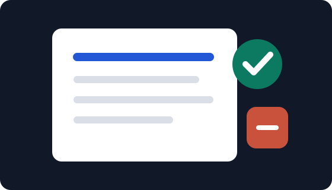

Purpose
Make progress visible so KapriTech is not only a website, but a documented learning journey.
Project detail
A public record of what is being built, what is being learned, and how KapriTech improves over time.

Make progress visible so KapriTech is not only a website, but a documented learning journey.
Writing progress clearly helps turn practice into proof and makes each improvement easier to remember.
Add fuller daily entries, screenshots, problems solved, and short reflections after each build session.